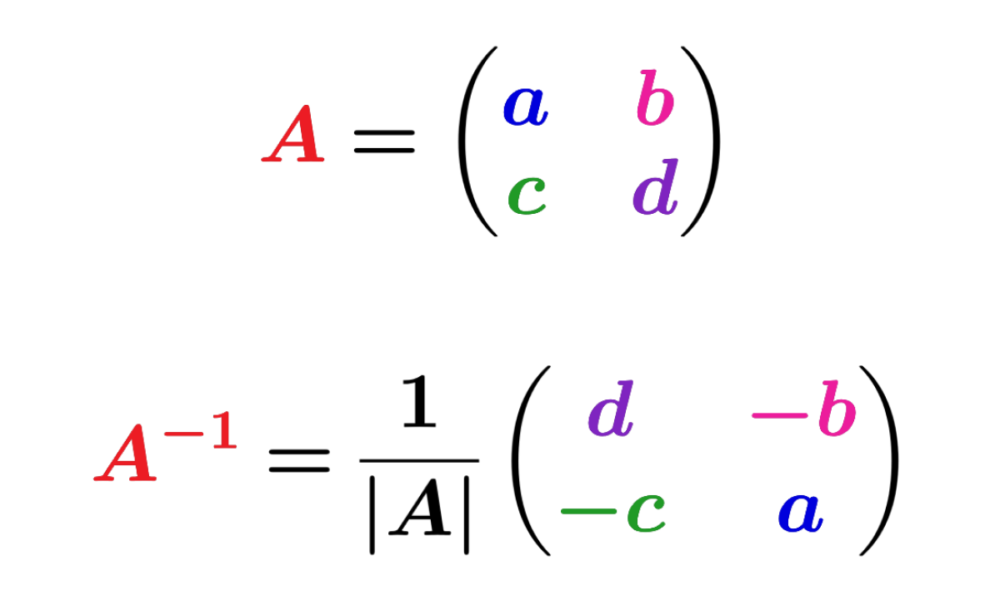

|  |
A matriz inversa é um conceito da álgebra linear que se aplica apenas a matrizes quadradas, ou seja, aquelas que possuem o mesmo número de linhas e colunas. Dizemos que uma matriz A possui inversa quando existe outra matriz A⁻¹ que, ao ser multiplicada por A, resulta na matriz identidade. Nem todas as matrizes possuem inversa, por isso depende de o determinante ser não nulo. Na prática, a matriz inversa é empregada para resolver sistemas lineares de maneira mais direta, possibilitando expressar a solução na forma X = A⁻¹B, onde A representa a matriz dos coeficientes, B é o vetor das constantes e X é o vetor das incógnitas. Na criptografia, as matrizes inversas desempenham um papel significativo, especialmente em técnicas clássicas de codificação que se baseiam em transformações lineares. Neste procedimento, uma mensagem é convertida em vetores numéricos, os quais são multiplicados por uma matriz chave para produzir uma versão codificada da informação. A decodificação só é possível utilizando a matriz inversa da chave empregada, assegurando a segurança, uma vez que apenas quem possui essa matriz pode recuperar a mensagem original. |